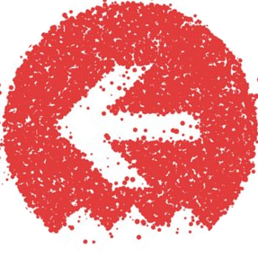
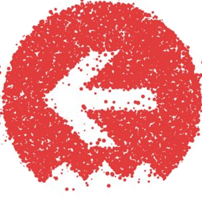

Northeast Scala Symposium 2023
Join us online on October 26-28, 2023, to celebrate the return of NE Scala!
Since 2011, the New York, Boston, and Philadelphia Scala meetups have hosted this community-driven Scala conference. Because the Northeast Scala Symposium (NE Scala, to its friends) is community-driven, you help create it. The NE Scala talks are proposed by the attendees, who then vote to select which will be given.
As we put things back together again, after several pandemic-induced years of separation, we're keeping it light and easy this time around, so we can focus on rebuilding the community. So we're going to do another round of virtual conference this year, with an eye towards hopefully switching back to in-person next time around.
That said, we're looking to have the same great three days of talks and socializing as always. (And we have ideas about encouraging the various local Scala communities to leverage this chance.)
Dates
As usual, NE Scala and the Typelevel Summit will pair up for two days of recorded talks, followed by an "unconference" day:
- Thursday, October 26, 2023: Typelevel Summit
- Friday, October 27, 2023: NE Scala Conference
- Saturday, October 28, 2023: NE Scala Unconference
 Tickets

Tickets

Ticket information to come! We're still discussing prices, but since it's an online conference we'll be looking to keep it inexpensive.
Sponsors
Would your company be interested in sponsoring the conference? Drop us a note at sponsors@nescala.org
Code of Conduct
The Northeast Scala Symposium is committed to providing an environment that encourages and empowers its members to teach, learn, and collaborate. We welcome every skill level – from beginners to experts – to participate and advance the Scala community.
Importantly, our members represent multiple dimensions of difference – across gender, gender identity and expression, sexual orientation, disability, physical appearance, body size, race, religion, and more – and we want everyone to feel comfortable bringing their full selves to the conference.
This means all members should apply a high degree of care and consideration to how they interact with others. We do not tolerate harassment in any form, but also want to go even further in actively creating an environment of belonging, inclusion, safety. Anyone acting contrary to the spirit of this mission will be asked to leave the conference at the discretion of the organizers.
During the conference, we have dedicated incident handlers and a Slack channel available for feedback. Please see the Reporting and Feedback section for details.